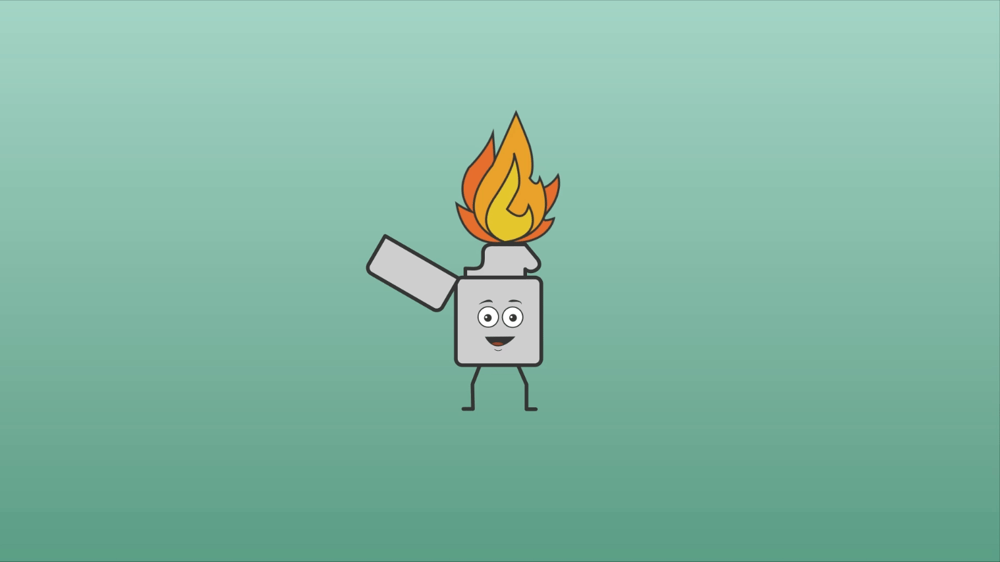

Interface & Beweging
- Beschrijving
Interface en Beweging was niet mijn meest succesvolle vak. Ik was van te voren best enthousiast over dit vak, maar door wat persoonlijke omstandigheden had ik uiteindelijk weinig tijd om daadwerkelijk te werken aan een animatie.
Gelukkig is het uiteindelijk wel gelukt om nog een paar animaties te maken, maar helaas waren er een paar extra vereisten (zoals een loader en geanimeerde iconen) waar ik nog geen tijd voor had. Dit project moet ik nog herkansen en het is daarom dus ook eigenlijk nog niet compleet.